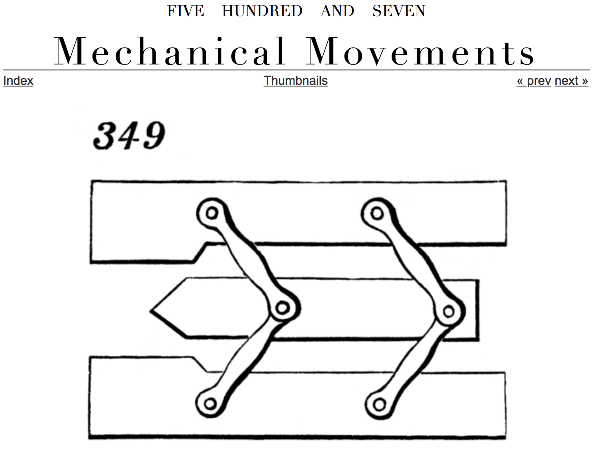
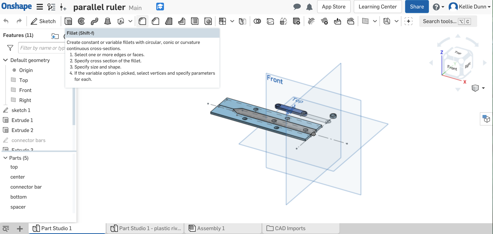
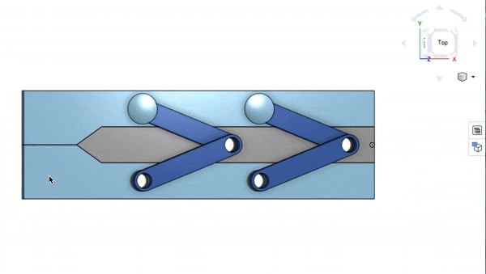
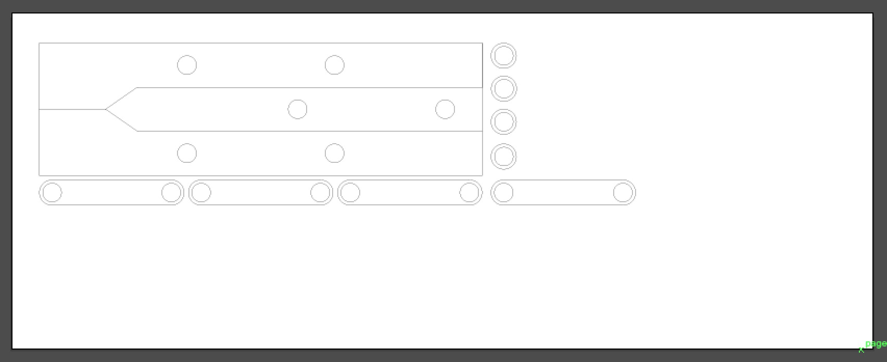
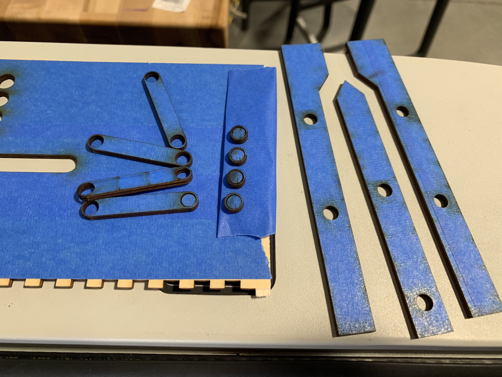
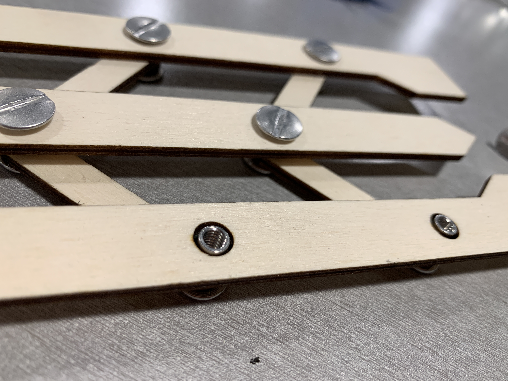

A4: Moving Parts!
by Kellie Dunn for HCDE 598
For this assignment, I made a parallel ruler inspired by one I saw on the 507 Mechanical Movements site.

Here is a photo of the finished ruler:

Here is my parallel ruler in Onshape.

This is the assembly. I didn't model the fasteners, because the plastic ones I had on hand were too short, so I shopped for fasteners at Stoneway Hardware once I knew how long they needed to be.

This is my layout in illustrator for laser cutting:

Some of my pieces were so tiny I had to be really careful taking them out of the laser cutter, I was lucky they didn't fall underneath the bed!

These are the fasteners I bought: I always learned to call them Chicago screws, but they are also sometimes called screw posts or barrel nuts. They come in a variety of lengths.

All of the components, unassembled and still with tape on from the laser cutter:

I made the mistake of forgetting to resize the diameter of my holes based on the width of the new fasteners before I cut my pieces. The holes are too big. Oops.

The parallel ruler moves okay...

But because the holes are too big, the fasteners are sloshy and it doesn't always stay parallel, which is the whole point.

If I have time this week, I'll resize the holes and cut a new one that's actually correct.
On the laser cutter, I used the following settings:
speed 10, power 100, freq 50
Documentation for Assignment 1:
Illustrator file
Onshape link
Acknowledgements:
Dave for brainstorming help!
Leo for Onshape advice!